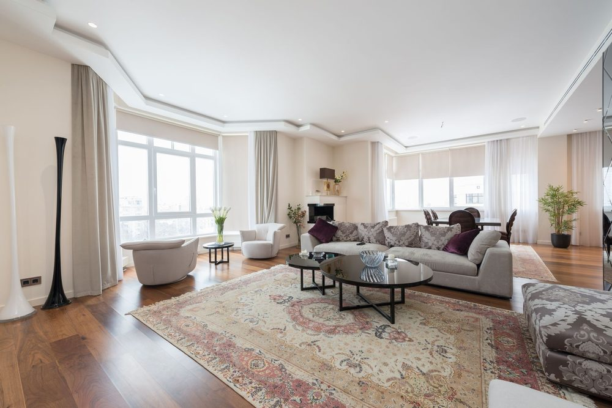

Understanding Reverberation
In this apartment
In a 1BHK in Pune, Anjali’s 12 × 14 ft living room has hard floors and a large window. Conversation feels harsh. Traffic is still audible with the window closed. Those are two different problems.
Reducing reverberation does not reduce traffic or neighbor noise.
Sound energy travels through the room and interacts with surfaces. Depending on frequency, geometry, and material, it can reflect, scatter, diffract, be absorbed, or pass through a boundary. It does not only travel in straight lines.
Reverberation is sound that persists after a source stops because energy keeps reflecting. Flutter echo is a distinct rapid repeat between parallel hard surfaces. A voice that sounds harsh often means strong early reflections and little absorption. A room that sounds boomy is more about low-frequency room modes than about a missing throw pillow. Traffic you can still hear with furnishings in place is transmission through the building, not echo.
Rugs, curtains, and upholstery can reduce some interior reflections. They generally cannot stop significant traffic, neighbor, or building noise. Success in this chapter means you can name which of those you have — not that the street got quieter.
Do this
- Walk the room and write: echo, harsh speech, boom, traffic, neighbor voices, HVAC, or door-gap hiss.
- Note floor, walls, windows, and whether you rent.
- Do not buy treatments until the problem is named.
Before you move on
- Noise type named
- Renter or owner noted
- No purchase yet